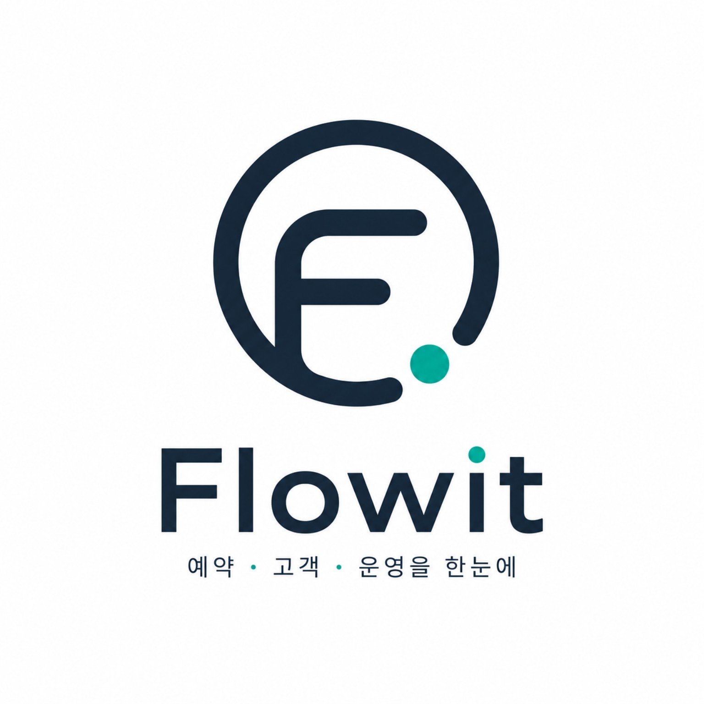

리저베이션 앱 — 현장 테스트 버전
운영 중실제 가게에서 직접 일하면서 만들고 테스트하는 현장 버전. 여기서 검증된 것이 네이티브 앱(v2)의 바탕이 돼요.
어떻게 만들었나요?
이 앱은 제가 AI(클로드)와 함께 만든 첫 앱이자, 지금도 실제 식당에서 매일 손님 예약을 받는 데 쓰이는 현장 버전이에요. 코딩을 따로 배운 적 없는 사람이 만든 프로그램이 진짜 가게에서 돌아간다는 게, 지금 생각해도 신기해요.
특별한 점은 가게에서 실제로 일하면서, 필요한 기능을 그때그때 만들고 바로 테스트한다는 거예요. '이런 게 있으면 편하겠다' 싶으면 클로드에게 부탁해 만들고, 바로 현장에서 써 보며 다듬어요. 책상 위가 아니라 진짜 손님 앞에서 검증되는 셈이죠.
기술적으로는 웹사이트를 만드는 'React'로 화면을 짜고, 그걸 'Capacitor'라는 도구로 감싸서 안드로이드 앱(APK)으로 만들었어요. 데이터는 구글의 'Firebase'라는 창고에 저장했고요.
다만 처음 만든 거라 구조에 한계도 있어요. 화면 코드가 `App.js` 파일 하나에 통째로 들어 있고, 여러 가게의 데이터를 깔끔하게 나누기 어려운 점 같은 것들이요. 여기서 현장 테스트로 검증한 기능과 배운 교훈을 바탕으로, 처음부터 제대로 다시 만드는 것이 바로 네이티브 앱(Flowit v2)이에요.